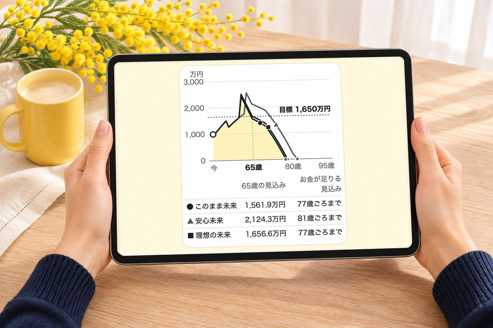

50代・60代からのライフ＆マネー実践プログラム
NISAも、年金も、老後資金も、
情報はたくさんあるのに、
「結局、私はどうすればいいの？」と思っていませんか？
お金の「守り方・増やし方・使い方・残し方」を学び、
自分の数字で未来をシミュレーション。
3ヶ月で、あなた専用の「My Money Plan」を完成させる
50+Money School
お申し込み締切：2026年12月19日（土）23:59
お申し込み締切まで
00日00時間00分00秒
お申し込みの受付は終了しました
将来の
YouTube
どれも
「それで、結局、私は
例えば、こんな
将来の
でも、お金を
だから、なかなか
もし、そんな
なぜなら、一般的な
同じ
預貯金が
60歳で
海外旅行を
必要な
例えば、「毎月
大切なのは、誰かに
自分の
将来の
でも、こんな
これからの
その
時間も、健康も、大切な
だから
「いくら貯めるか」
将来に
その
お金を
これが、50+Money

今の
60歳、65歳、70歳、80歳、90歳……
これからの
さらに、条件を
そんな
「ここは、も
「この
「まずは、この
漠然とした
未来を
その
50+Money School
です。
3ヶ月で、お金の
金融知識を
「結局、私は
その
未来逆算型
を
今の
旅行・住まい・
お金の
自分が
そして、3ヶ月で
My Money Plan
あなたの
50+Money School
難しい
まずは、初心者でも
そのうえで、自分の
生活と
生活費・
必要な
NISA・
将来の
年金・資産の
自分と
老後後半の
すべての
基本と
それが、50+Money School
| 今の | 3ヶ月後に |
|---|---|
| NISAは | 商品の |
| いくら積み | 生活費や |
| 老後の | 将来の |
| 旅行に | 旅行費の |
| 何歳まで | 退職時期に |
| 結局、何から | 今すぐ・90日・ |
こうした
それが、あなた
これからの
今の
そして、これから
一つに
自分の
希望・安心・
その
ここに
※完成見本は
講義で
宿題で
今の
完成する
NISA・
完成する
旅行・住まい・
バケットリストや
完成する
固定費・保険・
完成する
年金・退職時期・
現状維持を
相場下落や
完成する
自分が
相続や
完成する
そんな
家族や
かと
結局、YouTube
もし、同じように
50+Money School
もちろん、資産額や
大切なのは、誰かと
ひとりで
そんな
3ヶ月で
資産額が
収入や
新しく
だから
NISA・
講座内容、制度の
経済・金融・年金・
同じ
資産・収入・
3ヶ月で
これが、初年度12ヶ月の
皆さん、これからの
きっと、一度や
そして、その
だから
50+Money School
これから
そして、その
YouTube
でも、知識を
「結局、私は
と
50+Money School
3ヶ月間、実際に
その
と
そして、3ヶ月後には、
「これから
を
1年後も、NISAや
老後の
あるいは、特に
でも、数年後に
「あの
そう
これからの
そして、今の
だから
一つ
でも、その
お金の
自分の
1年後、「あの
お金の
3ヶ月の
第1期からの
第1期からの
今回の
249,800円（税別）
税込274,780円
で
初回モニター
初回モニターでは、受講生の
その
この
初年度12ヶ月間の
これは、金融知識を
これから
もちろん、決して
だから
もし今、
「そろそろ、自分の
そう
その
お申し込み締切：2026年12月19日（土）23:59
お申し込み締切まで
00日00時間00分00秒
お申し込みの受付は終了しました
銀行振込と
一括
初回モニター特別価格
| お支払い方 | 1回あたり | お支払い |
|---|---|---|
| 銀行振込・一括おすすめ | 274,780円 | 274,780円 |
| 銀行振込・2回払い | 137,390円×2回 | 274,780円 |
| 銀行振込・3回払い | 1回目 94,780円 2・3回目 90,000円 | 274,780円 |
| クレジットカード・一括おすすめ | 274,780円 | 274,780円 |
※表示金額は
※銀行振込の
※クレジットカードは
※分
初年度12ヶ月間の
2年目以降も
年会費
継続は
2027年1月開講｜全6回
| 開催日 | 時間 | 形式 |
|---|---|---|
| 第1回｜ | 13:00〜15:00 | Zoom |
| 第2回｜ | 20:30〜22:30 | Zoom |
| 第3回｜ | 12:00〜14:00 | リアル会場＋Zoom |
| 第4回｜ | 20:30〜22:30 | Zoom |
| 第5回｜ | 13:00〜15:00 | Zoom |
| 第6回｜ | 20:30〜22:30 | Zoom |
未来TOP10や
東京都内の
14:30〜
※会場の
はい。NISAや
必須では
講座アーカイブを
講座内容、制度の
個別の
いいえ。資産額や
Zoomで
4〜12ヶ月目の
2年目以降の
完成を
将来を
FP講師の
担当する講義・
※実際に
これからの
どんな
そして、その
すべての
50+Money Schoolで、一つ
お金で
その
あなた
3ヶ月の
第1期からの
初回モニター特別価格
249,800円（税別）
税込274,780円
第1期からの
お申し込み締切：2026年12月19日（土）23:59
お申し込み締切まで
00日00時間00分00秒
お申し込みの受付は終了しました
※お申し込み前に、提供内容・
※本スクールは